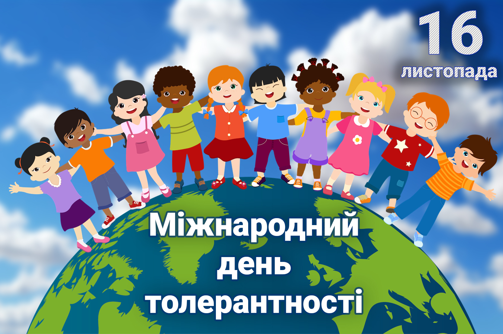

Толерантність: ключ до дружби
Толерантність — це повага, прийняття та розуміння різних людей, культур, думок і поглядів. Бути толерантним означає вміти слухати інших, спокійно вирішувати конфлікти і підтримувати дружні стосунки з усіма.
Чому толерантність важлива?
- Допомагає уникати конфліктів та непорозумінь.
- Сприяє дружбі та співпраці.
- Розвиває емпатію та розуміння інших.
- Підвищує атмосферу довіри в колективі та суспільстві.
Приклади толерантності в житті
- Допомогти новому вихованцю гуртка адаптуватися, навіть якщо він з іншого міста чи країни.
- Почути думку друга, навіть якщо вона відрізняється від твоєї, і обговорити її спокійно.
- Вітати свята або традиції інших культур, навіть якщо вони незвичні для тебе.
- Використовувати дружні слова і не сміятися з тих, хто відрізняється зовнішністю чи звичками.
Інтерактивна вікторина
1. Що означає бути толерантним?
2. Чому толерантність важлива в колективі?
3. Як ти можеш проявити толерантність у школі чи гуртку?
4. Що краще робити, якщо твій друг думає інакше?
5. Який вчинок є проявом толерантності?